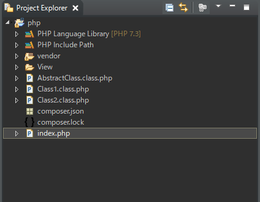
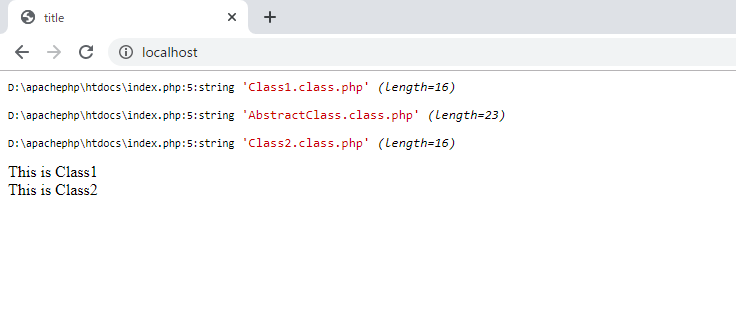

[PHP] 自動require及びincludeをする方法(spl_autoload_register)
こんにちは。明月です。
全樹でrequireとincludeに関して説明したことがあります。
link - [PHP] requireとinclude、そして「@」の使用方法
筆者が考えてPHPでプログラミングする時に、一番不便なことがrequireとinclude宣言です。
小さいプロジェクトならそんなに不便とは感じられない可能性もありますが、大きいプロジェクトなら様々なところでクラスを呼出すし関連ページを全て呼び出さなければならないので、すごく大変になるでしょう。
JavaやC#の場合はパッケージ単位、namespace単位で宣言します。それでもソースの上にimportやusingキーワードが多くなることがあります。
まして、クラス単位であるPHPページならすごく多くなるでしょう。
筆者は以前に参加したプロジェクトでrequireだけで何百行目になったことも見たことがあります。
これを解決する関数で「spl_autoload_register」ということがあります。実はこの関数はPHP 5.3から提供していますが、筆者の場合は「7.0」から認識しました。
それで以前にはPHPの場合はパッケージ管理が難しいという認識がありましたが、実はそれじゃなかったんです。やはり、ソースパフォーマンスや可読性は開発者の能力の違いですね。言語は以前から提供しましたが。。。
link - https://www.php.net/manual/en/function.spl-autoload-register.php
<?php
// Classをnewすれば呼出す。
spl_autoload_register(function($class) {
try {
// Classの名前 + ".class.php"の名にファイル名を探す。
$filename = $class . ".class.php";
// デバッグ
var_dump($filename);
// includeする。ファイルが無い場合、エラーを発生する。
if(!@include_once $_SERVER ["DOCUMENT_ROOT"] ."/". $filename) {
throw new Exception("not file");
}
} catch ( Exception $e ) {
// エラーが発生するとバッファクリア
ob_clean();
// エラーが内容を表示する。
echo $e;
die();
}
});
// requireやincludeなしでClass1とClass2を呼出す。
$class1 = new Class1();
$class2 = new Class2();
?>
<!DOCTYPE html>
<html>
<head><title>title</title></head>
<body>
<!-- Class１のrun関数を呼出す。 -->
<?=$class1->run()?>
<br />
<!-- Class2のrun関数の呼出す。 -->
<?=$class2->run()?>
</body>
</html>

<?php
abstract class AbstractClass {
public function run() {
return $this->getData();
}
protected abstract function getData();
}
?>
<?php
class Class1 extends AbstractClass {
protected function getData() {
return "This is Class1";
}
}
?>
<?php
class Class2 extends AbstractClass {
protected function getData() {
return "This is Class2";
}
}
?>

上の例をみれば、ページの中でクラスだけあるファイルは「.class.php」の拡張子で作成しました。これは標準規約じゃなく、私が楽に区分するように決めた規則です。
ソースでspl_autoload_registerの関数以外にはincludeやrequireがありません。でもClass1をインスタンス生成する時(newで割当て)、spl_autoload_registerの関数が呼出してClass1.class.phpファイルを読み込みます。
ここでinclude_onceで読み込みましたので重複読み込みはありません。Class1クラスはextendsキーワードでAbstractClassを経書しました。それで「AbstractClass.class.php」ファイルも読み込みました。
Class2.class.phpの場合は、「AbstractClass.class.php」を読み込んだことがあるので、再読み込みはしません。
Htmlページではrun関数を呼出しました。run関数では派生クラスのgetData関数を呼出しますね。
それでClass1の場合は「This is Class1」、Class2の場合は「This is Class2」という結果が表示されます。
- [CakePHP] ORMのテーブルFetch設定2020/02/18 03:00:00
- [CakePHP] Cakeフレームワークでデータベースに接続する時に使うQuery式とEntityクラス、Tableクラス、ResultSet2020/02/17 08:16:23
- [CakePHP] データベース(MariaDB(Mysql))を接続する方法2020/02/14 03:00:00
- [PHP] namespaceとuse2020/02/13 03:00:00
- [CakePHP] RequestとResponseに関して2020/02/12 03:00:02
- [CakePHP] PHPのCakeからAjax要請がある時、jsonタイプ(json_encode関数)でResponseする方法とControllerでViewを選択する方法2020/02/08 03:00:00
- [CakePHP] MVCフレームワークのCakeをインストールする方法2020/02/07 03:00:02
- [PHP] 自動require及びincludeをする方法(spl_autoload_register)2020/02/05 03:00:00
- [PHP] 匿名関数(ラムダ式)とクロージャ(closure)2020/02/04 03:00:00
- [PHP] PHPのコーディング領域とデザイン領域を分離するテンプレートライブラリ Smarty2020/02/02 03:00:00
- [PHP] Reflection - Variable編2020/02/01 03:00:00
- [PHP] Reflection - Method編2020/01/31 03:00:00
- [PHP] Reflection - Class編2020/01/30 03:00:00
- [PHP] エラーページ処理方法(追加: ob_cleanとdie関数使用方法)2020/01/29 03:00:00
- [PHP] 分散設定ファイル(.htaccess) 使用方法2020/01/28 03:00:00
- [Java] Redisデータベースを接続して使い方(Jedisライブラリ)2022/02/16 18:13:17
- [C#] Redisのデータベースを接続して使い方2022/02/15 18:46:09
- [CentOS] Redisデータベースをインストールする方法とコマンドを使い方2022/02/14 18:33:07
- [Design pattern] 3-6. ステートパターン(State pattern)2021/11/17 20:04:47
- [Design pattern] 3-5. メメントパターン(Memento pattern)2021/11/16 20:01:36
- [Design pattern] 3-4. イテレータパターン(Iterator pattern)2021/11/15 19:31:28
- [CentOS] Linux環境(CentOS)でCassandra(NoSQL DB)をインストールする方法(DBeaverブラウザでNoSQL使い方)2021/11/12 17:33:58
- [Design pattern] 3-3. コマンドパターン(Command pattern)2021/11/05 17:01:42
- [Window] apache-tomcatでロードバランシング(Load balancing)する方法とセッションクラスタリング（セッション共有）2021/11/05 16:58:45
- [Window] Apacheでmod_jkとmod_proxyの差異、apacheでtomcatのwebsocketのプロキシフォーワードする方法2021/11/05 16:55:05
- [PHP] Apache環境の同じホスト中でPHPとJava(Servlet)を同時に起動、運用する方法2021/11/05 16:52:04
- [C#] 61. ウィンドウフォーム(Window form)でスレッド(Thread)を使い方、クロススレッド問題解決2021/11/04 19:29:51
- [Design pattern] 3-2. 責任の連鎖パターン(Chain of responsibility pattern)2021/11/04 19:27:58
- [Design pattern] 3-1. ストラテジーパターン(Strategy pattern)2021/11/03 18:38:52
- [C#] 60. ウィンドウフォーム(Window form)のイベント設定する方法2021/11/02 21:18:08